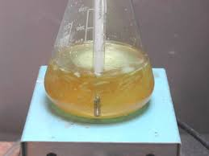
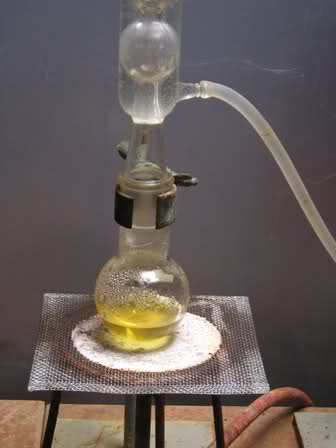
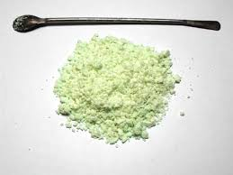
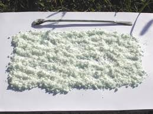

Per far fede (fin quando sarà possibile...?) al titolo di questo blog ed in previsione di una futura altra sintesi (probabilmente sarà la 2-4-dinitrofenilidrazina), ho preparato il 2,4-dinitroclorobenzene, partendo dal p-nitroclorobenzene già presentato un anno fa nel post n.198.
Si sa che nitrare il benzene è facile; anche mono-nitrare il clorobenzene non presenta particolari difficoltà pur essendo il cloro un elemento disattivante o-p-direttore. Inserire un secondo gruppo nitrico (meta-direttore e fortemente disattivante) nell'anello non è così semplice e richiede condizioni diciamo così, "robuste"! Come dire miscela solfonitrica in grande eccesso, oltre a temperatura e tempo di reazione adeguati.
Mi ero segnato una procedura diversa dal solito, recuperata non ricordo dove, con l'intento di provarla prima o poi; è diversa perchè non fa uso di HNO3 fumante d.1,50 ma lo stesso viene generato direttamente in sito per azione dell'H2SO4 sul nitrato di potassio.
Le condizioni di lavoro di questa sintesi (e il prodotto finale!) sono assai toste, pertanto tutto il lavoro va eseguito con ogni cautela derivante da adeguata esperienza. Niente improvvisazione nemmeno stavolta... e lo dico solo quando è proprio indispensabile!
Ometto le formule di reazione; il 2,4-dinitroclorobenzene è questo:

Materiale occorrente:
- 4-nitroclorobenzene Cl-C6H4-NO2 (utilizzabile anche la mix di isomeri orto-para)
- acido solforico
- potassio nitrato
- etanolo
- vetreria opportuna
In un pallone da 250 ml munito di agitatore magnetico si pongono 110 ml di H2SO4 conc. e di aggiungono a piccole porzioni 27 gr di KNO3 nitrato di potassio; il sale deve sciogliersi completamente a freddo, solo con un minimo sviluppo di vapori nitrosi.

A questo punto, sempre con l'agitatore in funzione, aggiungere a piccole porzioni 25 g di p-cloronitrobenzene; applicare un refrigerante a ricadere e riscaldare la miscela a 140-150° per un'ora e mezza, mescolando energicamente ogni tanto.

Si ha sviluppo molto moderato di vapori nitrosi che defluiscono dall'allhin verso la cappa o all'esterno.
Si nota anche il mezzo di riscaldamento insistentemente e anacronisticamente adottato: il buon vecchio bunsen e la reticella! Cose dell'altro mondo? Sicuramente... però basta starci attenti e in un vecchio lab anacronistico come il mio si fa (come un tempo!) quel che si vuole...
Terminato il tempo si lascia raffreddare e si versano le due fasi con attenzione in 250 ml di acqua e ghiaccio. Si separa la massa solida e si filtra su buchner, lavando prima con acqua, poi con una sol. diluita di NaHCO3 e poi ripetutamente con acqua fino ad eliminazione completa dell'acidità.
Questo è uno dei prodotti che fortunatamente si filtrano con la massima facilità.

Il prodotto grezzo (sopra) si ricristalizza da etanolo, ottenendo una polvere cristallina quasi bianca e quasi inodora.
P.f. 47° (teorici 48-52°)- Resa ottenuta 29 g, circa il 90%.

Non sono riuscito ad ottenere cristallini più grandi e di maggiore soddisfazione estetica perchè a causa del basso punto di fusione, durante il raffreddamento dell'etanolo e la precipitazione del prodotto esso liquefa; successivamente con l'avanzare della separazione solidifica sul fondo del recipiente in una massa microcristallina, che va poi rotta con la spatola ed asciugata.
Il prodotto va maneggiato con cautela (anzi, NON va affatto "maneggiato"!) perchè è un forte irritante cutaneo e non deve venire in contatto con la pelle.
Sigillato nel suo contenitore se ne sta ora buono in attesa di venir a sua volta trasformato in qualcos'altro... e così la saga continua.
2 commenti